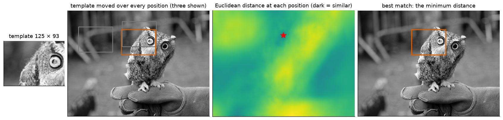
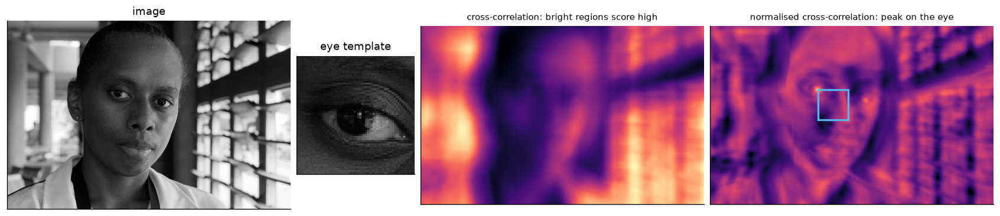
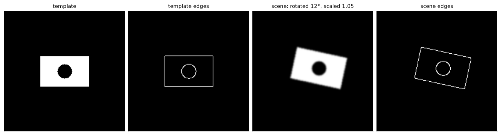
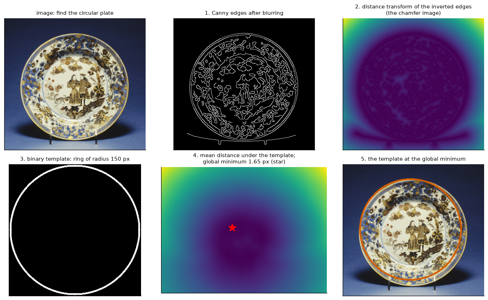
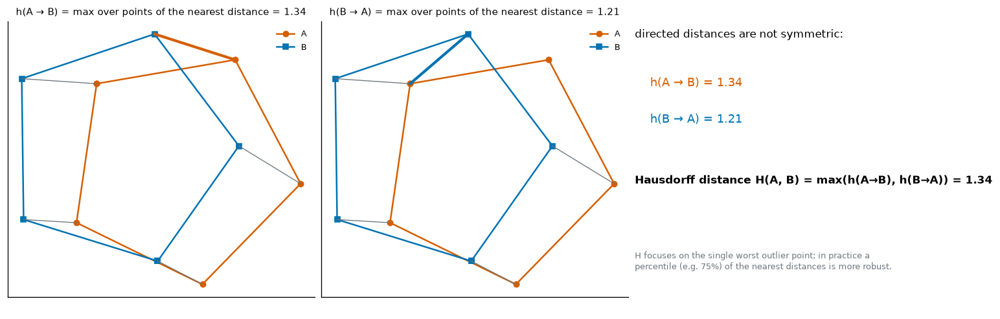

Lesson 04.04
Template matching
Detecting a specific object by exhaustive comparison with a template: Euclidean and correlation-based similarity, normalised cross-correlation, and shape-based matching with the distance transform, chamfer distance and Hausdorff distance.
Learning outcomes
After this lesson you should be able to:
- describe template matching and its similarity measures: Euclidean distance, cross-correlation and normalised cross-correlation;
- explain why shape-based matching is more robust than pixel correlation;
- use the distance transform to compute distances between shapes efficiently;
- describe chamfer matching and compute the directed and full Hausdorff distance.
Basic object detection
Basic object detection looks for a specific object, or type of object, in an image. Keypoint matching does this robustly against orientation, scale and illumination changes. An alternative is to use the object, or part of it, as a template and search the image exhaustively for the best match. Template matching is a pure image-processing approach without machine learning, which makes it less robust than the Viola-Jones and HOG detectors to changes in orientation, scale and illumination.
Template matching
The template is moved systematically over every position of the image, like a kernel in convolution or a structuring element in a non-linear filter, and a similarity metric is evaluated at each position. A stride of 1 gives the best chance of an exact match; a larger stride reduces computation. The simplest metric is the Euclidean distance between corresponding pixels of the template and the image region,
$$d(m, n) = \sqrt{\sum_{i, j} \big( T[i, j] - I[i + m, j + n] \big)^2 }, \tag{1}$$
with the template shifted by $(m, n)$; the position with the lowest score is the best match.

.jpg){kind=link}
Correlation-based similarity
Cross-correlation between template and image is another similarity measure. Its equation resembles convolution but the template is not reversed, and the highest value marks the best match. Plain correlation has a weakness: the score also grows wherever the image is bright, so bright regions produce false local maxima.
Normalised cross-correlation
Normalised cross-correlation keeps the element-wise multiply-and-sum but subtracts the mean and divides by the standard deviation of both template and image region. The template's statistics are constant, but the image mean and standard deviation must be recomputed at every position, so NCC is more expensive than plain correlation. In return the false maxima in bright regions disappear.

.jpg){kind=link}
Shape-based matching
Correlation detects regions of similar pixels with a sharp peak when the template fits, but the peak collapses with even small changes in orientation or appearance, and its sharpness gives little indication of how close a near-match is. Shape-based matching instead extracts the object outline by edge detection and matches it against the edge image of the scene, using a distance between binary shapes as the score; this tolerates minor changes of orientation and appearance. As before the template is moved over the image and the distance evaluated at each position.

Shortest distance
The first candidate metric is the shortest distance between shapes $A$ and $B$: for every point $a \in A$ find the smallest distance to any point $b \in B$, and keep the smallest of these,
$$d_{min}(A, B) = \min_{a \in A} \min_{b \in B} \| a - b \|. \tag{2}$$
The same shortest distance results for shapes in very different relative positions, so it is not an effective measure of overlap. It is, however, cheap to compute with the distance transform: the distance transform of the binary image of $B$'s edges gives, at every pixel, the shortest distance to $B$, so sampling it at the pixels of $A$ gives all the required distances at once.
![The shortest distance is a poor measure of how well two shapes match. In (a) the outlines nearly coincide and in (b) one is rotated and pushed away, yet both have exactly the same shortest distance (solid line), because only the single closest pair of points is used. The furthest-nearest pair (dashed), which is the Hausdorff distance, separates the two cases immediately. Shortest distances are cheap to get: the distance transform of B gives the distance from every pixel to B, so the values at A's pixels are all the distances at once (c).](figures/shortest_distance.png)
Chamfer matching
Chamfer matching is a better alternative. Edges are detected in the scene and the edge image is inverted, so that edges are black; the distance transform of this image gives every pixel its distance to the nearest edge. The result is called the chamfer image, because the edges become gradual slopes like a chamfered edge in woodwork. The binary template is applied at every position and the distance values under its pixels are summed,
$$D_{chamfer}(m, n) = \frac{1}{|T|} \sum_{(i, j) \in T} DT[i + m, j + n], \tag{3}$$
so that every template pixel, not only the nearest, contributes; the position with the minimum sum is the match. The sum can be computed as a correlation of the binary template with the chamfer image, and the global minimum found with a small further algorithm of erosion, comparison and thresholding.


Hausdorff distance
The directed Hausdorff distance from $A$ to $B$ takes, for every $a \in A$, the smallest distance to any point of $B$, and keeps the largest of these:
$$h(A, B) = \max_{a \in A} \min_{b \in B} \| a - b \|, \tag{4}$$
which reduces to a maximum over the distance transform of $B$ sampled at $A$. It finds the point of $A$ furthest from $B$ and is far better than the shortest distance at telling overlapping from non-overlapping shapes. The two directed distances are not symmetric, $h(A, B) \neq h(B, A)$ in general, and the reverse direction needs the distance transform of $A$. The overall Hausdorff distance is the larger of the two,
$$H(A, B) = \max\big( h(A, B),\, h(B, A) \big). \tag{5}$$
Because it focuses on outlier points, where the shapes diverge most, a percentile of the distances (for example the 75th) is often used instead of the maximum. The Hausdorff distance can match templates despite differences in orientation.

Worked example 1: Hausdorff Distance
Given two point sets $A = \{\,(2.5,5.05), (2.76,3.78), (4.05,3.65), (4.58,4.83), (3.62,5.69)\,\}$ and $B = \{\,(2.61,3.74), (3.23,2.61), (4.5,2.84), (4.67,4.12), (3.5,4.68)\,\}$:

Distances are Euclidean: $\|p - q\| = \sqrt{(p_x-q_x)^2+(p_y-q_y)^2}$.
(a) Compute the directed Hausdorff distance $h(A \to B) = \max_{a \in A}\;\min_{b \in B}\;\|a - b\|$
(b) Compute the directed Hausdorff distance $h(B \to A) = \max_{b \in B}\;\min_{a \in A}\;\|b - a\|$
(c) Hence determine the Hausdorff distance $H(A,B) = \max\bigl(h(A \to B),\;h(B \to A)\bigr)$
Show the solution
Part (a) — $h(A \to B)$
For each $a_i \in A$, compute $\|a_i - b_j\|$ for every $b_j \in B$ and keep the minimum.
$a_0 = (2.5, 5.05)$
- $b_0 = (2.61,3.74)$: $\|a_0 - b_0\| = 1.31$
- $b_1 = (3.23,2.61)$: $\|a_0 - b_1\| = 2.55$
- $b_2 = (4.5,2.84)$: $\|a_0 - b_2\| = 2.98$
- $b_3 = (4.67,4.12)$: $\|a_0 - b_3\| = 2.36$
- $b_4 = (3.5,4.68)$: $\|a_0 - b_4\| = 1.07$
$\min = 1.07$
$a_1 = (2.76, 3.78)$
- $b_0 = (2.61,3.74)$: $\|a_1 - b_0\| = 0.16$
- $b_1 = (3.23,2.61)$: $\|a_1 - b_1\| = 1.26$
- $b_2 = (4.5,2.84)$: $\|a_1 - b_2\| = 1.98$
- $b_3 = (4.67,4.12)$: $\|a_1 - b_3\| = 1.94$
- $b_4 = (3.5,4.68)$: $\|a_1 - b_4\| = 1.17$
$\min = 0.16$
$a_2 = (4.05, 3.65)$
- $b_0 = (2.61,3.74)$: $\|a_2 - b_0\| = 1.44$
- $b_1 = (3.23,2.61)$: $\|a_2 - b_1\| = 1.32$
- $b_2 = (4.5,2.84)$: $\|a_2 - b_2\| = 0.93$
- $b_3 = (4.67,4.12)$: $\|a_2 - b_3\| = 0.78$
- $b_4 = (3.5,4.68)$: $\|a_2 - b_4\| = 1.17$
$\min = 0.78$
$a_3 = (4.58, 4.83)$
- $b_0 = (2.61,3.74)$: $\|a_3 - b_0\| = 2.25$
- $b_1 = (3.23,2.61)$: $\|a_3 - b_1\| = 2.6$
- $b_2 = (4.5,2.84)$: $\|a_3 - b_2\| = 1.99$
- $b_3 = (4.67,4.12)$: $\|a_3 - b_3\| = 0.72$
- $b_4 = (3.5,4.68)$: $\|a_3 - b_4\| = 1.09$
$\min = 0.72$
$a_4 = (3.62, 5.69)$
- $b_0 = (2.61,3.74)$: $\|a_4 - b_0\| = 2.2$
- $b_1 = (3.23,2.61)$: $\|a_4 - b_1\| = 3.1$
- $b_2 = (4.5,2.84)$: $\|a_4 - b_2\| = 2.98$
- $b_3 = (4.67,4.12)$: $\|a_4 - b_3\| = 1.89$
- $b_4 = (3.5,4.68)$: $\|a_4 - b_4\| = 1.02$
$\min = 1.02$
$$h(A \to B) = \max(1.07, 0.16, 0.78, 0.72, 1.02) = 1.07$$
Part (b) — $h(B \to A)$
For each $b_j \in B$, compute $\|b_j - a_i\|$ for every $a_i \in A$ and keep the minimum.
$b_0 = (2.61, 3.74)$
- $a_0 = (2.5,5.05)$: $\|b_0 - a_0\| = 1.31$
- $a_1 = (2.76,3.78)$: $\|b_0 - a_1\| = 0.16$
- $a_2 = (4.05,3.65)$: $\|b_0 - a_2\| = 1.44$
- $a_3 = (4.58,4.83)$: $\|b_0 - a_3\| = 2.25$
- $a_4 = (3.62,5.69)$: $\|b_0 - a_4\| = 2.2$
$\min = 0.16$
$b_1 = (3.23, 2.61)$
- $a_0 = (2.5,5.05)$: $\|b_1 - a_0\| = 2.55$
- $a_1 = (2.76,3.78)$: $\|b_1 - a_1\| = 1.26$
- $a_2 = (4.05,3.65)$: $\|b_1 - a_2\| = 1.32$
- $a_3 = (4.58,4.83)$: $\|b_1 - a_3\| = 2.6$
- $a_4 = (3.62,5.69)$: $\|b_1 - a_4\| = 3.1$
$\min = 1.26$
$b_2 = (4.5, 2.84)$
- $a_0 = (2.5,5.05)$: $\|b_2 - a_0\| = 2.98$
- $a_1 = (2.76,3.78)$: $\|b_2 - a_1\| = 1.98$
- $a_2 = (4.05,3.65)$: $\|b_2 - a_2\| = 0.93$
- $a_3 = (4.58,4.83)$: $\|b_2 - a_3\| = 1.99$
- $a_4 = (3.62,5.69)$: $\|b_2 - a_4\| = 2.98$
$\min = 0.93$
$b_3 = (4.67, 4.12)$
- $a_0 = (2.5,5.05)$: $\|b_3 - a_0\| = 2.36$
- $a_1 = (2.76,3.78)$: $\|b_3 - a_1\| = 1.94$
- $a_2 = (4.05,3.65)$: $\|b_3 - a_2\| = 0.78$
- $a_3 = (4.58,4.83)$: $\|b_3 - a_3\| = 0.72$
- $a_4 = (3.62,5.69)$: $\|b_3 - a_4\| = 1.89$
$\min = 0.72$
$b_4 = (3.5, 4.68)$
- $a_0 = (2.5,5.05)$: $\|b_4 - a_0\| = 1.07$
- $a_1 = (2.76,3.78)$: $\|b_4 - a_1\| = 1.17$
- $a_2 = (4.05,3.65)$: $\|b_4 - a_2\| = 1.17$
- $a_3 = (4.58,4.83)$: $\|b_4 - a_3\| = 1.09$
- $a_4 = (3.62,5.69)$: $\|b_4 - a_4\| = 1.02$
$\min = 1.02$
$$h(B \to A) = \max(0.16, 1.26, 0.93, 0.72, 1.02) = 1.26$$
Part (c) — $H(A,B)$
$$H(A,B) = \max\bigl(h(A \to B),\;h(B \to A)\bigr) = \max(1.07,\;1.26) = 1.26$$
Check your understanding
1. With the Euclidean distance as the similarity measure, the best template match is at the position with
The distance is smallest where template and image agree; for correlation the best match is the highest score.
2. Why does plain cross-correlation produce false maxima?
Normalised cross-correlation subtracts the local mean and divides by the standard deviation to remove this effect.
3. Compared with plain correlation, normalised cross-correlation is
The template statistics are constant but the image statistics change with position.
4. Why is the shortest distance a poor measure of how well two shapes match?
A single nearest pair of points says nothing about the rest of the shapes.
5. In chamfer matching, the chamfer image is
Summing chamfer-image values under the template at each position gives the chamfer distance.
6. The directed Hausdorff distance h(A, B) is
It is a max-min; the full Hausdorff distance is the larger of the two directed distances, which are not symmetric.
Practice questions
Question types from the CE6021 question bank that cover this lesson: hausdorff.
Image credits
- My Favourite Faces (Imagicity 640), Graham Crumb, CC BY-SA 3.0
- Eastern screech owl (44327), Rhododendrites, CC BY-SA 4.0
- Plate with Dutch Couple, Walters Art Museum, Public domain
Other figures are generated from synthetic data by the lesson engines.